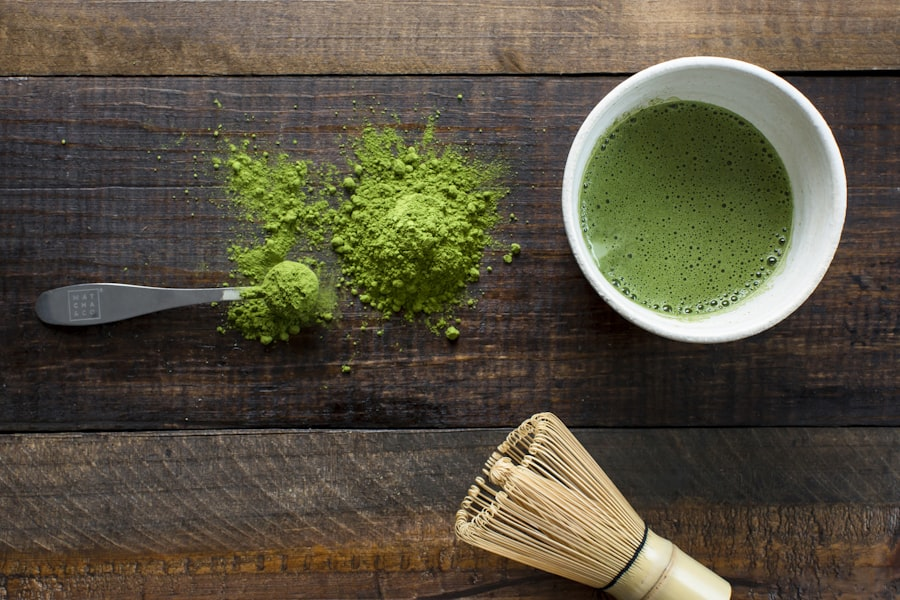
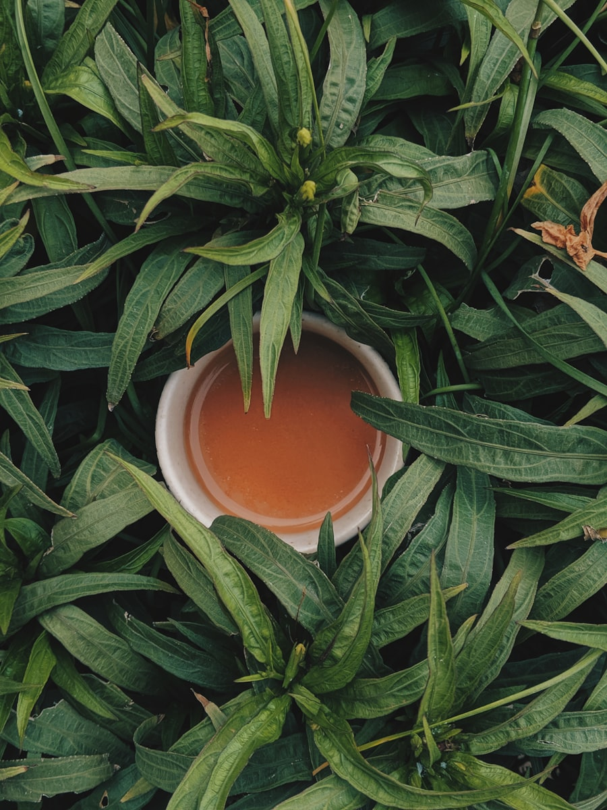

Est. 2014 · Stone-Ground Daily · Kyoto District
Sencha
Ceremonial grade matcha & a quiet tea house rooted in the slow ritual of leaf, stone & water.
We grind tea the slow way — stone on stone, a single bowl at a time, the way Uji masters have for four centuries.
Every tin begins in shade-grown gardens, is hand-picked at first flush, and is milled on granite so the leaf never warms. The result is a matcha that is grassy, vivid, and impossibly smooth.
Shade-Grown
Tencha leaves rest under canopy for twenty days, deepening chlorophyll & umami.
Hand-Picked
Only the youngest first-flush buds are gathered, sorted, and steamed within hours.
Stone-Milled
Granite usu turns slowly — forty grams an hour — keeping the powder cool and fine.
Inside the atelier · Atmosphere & ritual

